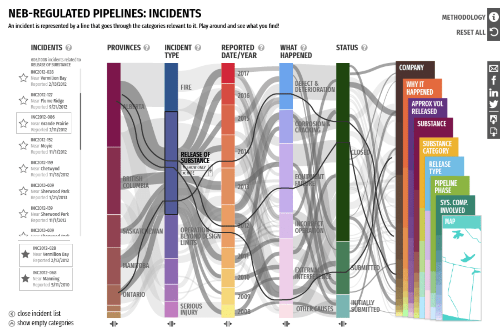
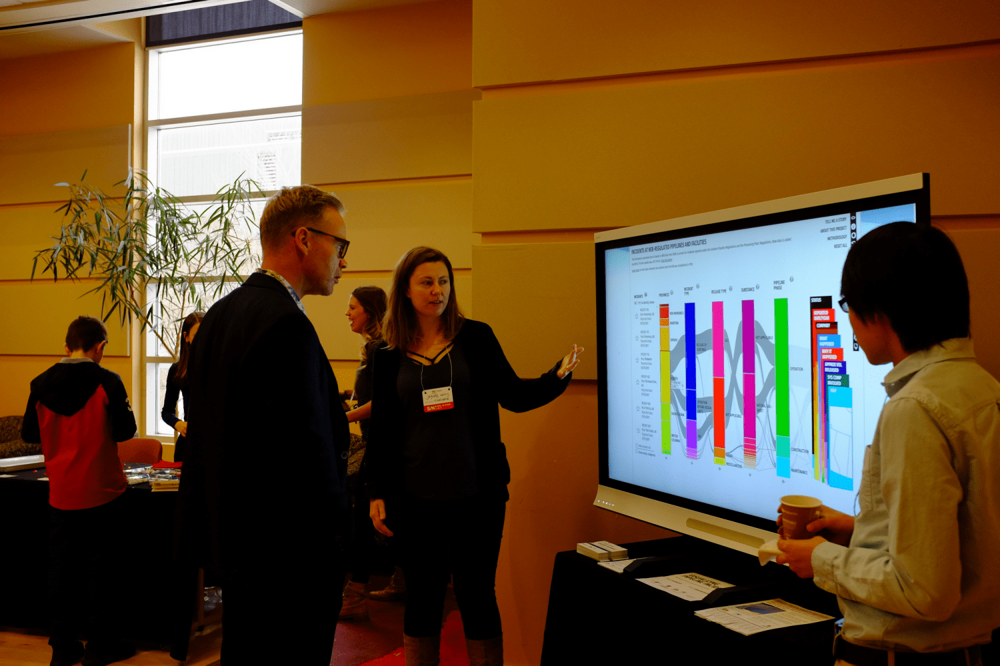

Pipeline Incidents
Making open data publicly accessible
Data Visualization Design
about
Pipeline Incidents is an interactive data visualization featuring open data from National Energy Board-regulated pipelines. It is customizable to allow for both broad and targeted explorations into the dataset. The visualization is available online here.
role
Data Visualization Designer
(Team Project)
timeline
8 months
(2017/04 - 2017/12)
methods
Stakeholder Workshops
Tableau Analysis
Paper Prototypes
Interactive Prototypes
Style Guides
PROBLEM
Open data is not accessible data
There is an increasing trend for data being opened up to public access, but much of this data is very complex and unwieldy, only useful for data scientists with domain knowledge. The Energy Visualization Project is a multi-year initiative to make Canada's open energy data publicly accessible, transparent, and understandable.
This project was a collaboration between Canada’s National Energy Board (NEB) and the University of Calgary’s Interactions Lab where I worked as a Data Visualization Designer. Our goal was to design a platform where anyone can explore and share interesting data stories, creating a starting point for engagement between the NEB and the general public.
The Pipeline Incidents dataset in particular was a challenging one featuring over 1000 recorded incidents with 100+ pieces of data for any given incident. Our task was to design a novel interactive visualization that can explore this dataset and uncover the stories hidden within.
SOLUTION
Parallel Coordinates Visualization
This interactive data visualization is based on a parallel coordinates plot. In this type of visualization, data dimensions are divided into columns with lines flowing between them. The aggregate of these lines form a broad view of how the data is distributed.
Key Data Columns
This visualization features 14 columns, each representing a key aspect of the data such as Region, Company, or Incident Type. The columns are then further broken into Categories.
Incidents are represented by the lines flowing between the categories on the columns. The thicker the line, the more incidents that share those categories.
{kind=link}
Category Selection
Clicking on a category such as "Alberta" shows all related incidents in a list on the left. From here, individual incidents can be selected to see its distribution line across the columns.
{kind=link}
Sidebar
The columns currently not shown can be found in the sidebar where they can be dragged into the main view.
{kind=link}
Filters
A filter can be applied so that only incidents related to specific categories are shown. This is helpful for focusing on areas of interest.
Here, we see incidents only from Transcanada Keystone Pipeline GP. We can filter down further into just 2015 incidents if we wanted.
{kind=link}
The key focus of this design is not to provide just one visualization, but a whole visualization system through careful selection of columns and filters. This way, it can provide a big picture of the dataset while also allowing for focused dives into specific topics.
PROCESS
From Data to Design
Stakeholder Workshops
The project kicked off with stakeholder workshops involving clients and experts from the NEB that have worked with this data for decades. These workshops encouraged cross-functional collaboration and resulted with insightful data stories that we wouldn't have been able to find otherwise. It was also a chance to create mutual understanding for the goals this visualization should achieve.
{kind=link}
Data Analysis
With new insight in mind, we went back and did a deep dive into the dataset with tools such as Tableau, spreadsheets, and scripts. This analysis process involved manipulating the data in different ways to uncover interesting trends and angles to approach the dataset.
The result is gaining familiarity with the characteristics of the data such as its distribution, extremities, and dependencies. We use this to inform our design phase where we brainstorm ways of visually representing the dataset. The goal of data visualization design is not to create one static view, but a system where viewers can discover and explore the data for themselves.
{kind=link}
Ideation
There were countless directions we could have taken with a dataset as rich as this one, so we spent a considerable amount of time brainstorming ideas through individual sketches as well as group workshops.
{kind=link}
I focused my ideas around location and time based data, as these are familiar concepts that provide grounding from a layperson’s perspective. By combining the two, I created a map and timeline based interface that had controls to browse and filter specific incidents. With the idea fixated in my mind, I set out to create a high-fidelity mockup.

However, we decided the narrow focus in map-driven interaction limited the exploration scope of the dataset too much. I learned a valuable lesson here on the benefits of quickly iterating with lower fidelity mockups instead of wasting time polishing higher fidelity mockups that may end up going in the wrong direction.
Ultimately, we decided on a parallel coordinates concept that a team member drafted up. This design was able to express various aspects of the data simultaneously, allowing users to see broad overviews as well as deeper exploration into individual categories of interest.
{kind=link}
Visual Design Iteration
Now that we have a visualization concept in mind, we expanded again to explore the visual design and how to map the data into visual elements. Rather than abandoning my timeline+map idea, we found a way to incorporate elements of it into this design. The timeline naturally fits as a column while the map can be represented as a wide column with connecting lines pointing to the rough location of the incident.
{kind=link}
{kind=link}
After many rounds of iteration and feedback, we settled on a design with a collapsed sidebar with staggered, cascading bars. This was analogous to pulling a book off a shelf to add to the current view.
{kind=link}
The color palette was meticulously chosen as it had to cover 14 columns with varying shades. It also had to satisfy strict client criteria while still looking visually cohesive.
Interaction Design
One of the most challenging aspects of the visualization was the Interaction Design. We had to differentiate between selecting a category (ex. all Alberta incidents) vs selecting an individual incident (ex. A specific fire incident in CHEECHAM, Alberta on Nov 1, 2012).
Initially we handled this by a complicated set of click/hover interactions on the bars. There was also a separate click and hold interaction to activate a filter box. Clearly there were too many interactions stacked on top of the bars and it was not intuitive at all. Something had to be done.
{kind=link}
I took on the task of organizing this mess into a new interaction flow that would be more intuitive to use. Paper prototypes of various UI components were created and brought to lab members who had never seen the project before. They were given a task to perform and to describe what they thought was the most intuitive action to take. This informal testing gave us insight into which interactions made sense or can easily be taught.
{kind=link}
The key takeaway we got through this exercise was to separate out individual incident selection into a separate UI element. The Incident List was born as a replacement to hover interactions on the bar. This also made mobile support much easier even if it wasn’t a priority at the time.
The incident list went through more iterations such as the placement of the list as well as using stars instead of pin icons for highlighting incidents. At this point, we felt confident enough in the design to create interactive prototypes to test the interaction for certain flows.
{kind=link}
Having the starred section of the list at the top revealed a shifting problem where the bottom list moves as the top list expands. Had we not created this prototype, we might not have noticed this until it was implemented.
{kind=link}
The prototypes are no longer online, but a video was created to showcase the interactions to stakeholders and developers.
An important lesson we learned in this phase was how much insight even a tiny bit of testing can provide. Even though we could not go out and do more formal user testing, being able to validate our ideas through rudimentary prototyping and feedback with lab members was valuable to not fall into the trap of thinking everything made sense to the users.
We also realized that current prototyping tools are not well suited for data visualization design. Tools like Invision are great for testing interaction between static screens, but interactions on data-driven visualizations can potentially alter hundreds of elements that have to be manually manipulated between mockup screens. This makes it hard to properly test interactions without resorting to a low-fidelity implementation of the design.
Style Guide
As a deliverable to stakeholders and the development team, we put together multiple style guides that describe design details such as pixel dimensions, color hexcodes, typography, and interaction details.
Creating these guides also helped keep our team aligned under common terminology and served as an internal reference point at different stages of the design. It was initially designed in Adobe InDesign, but soon moved onto a web based tool for easier updates.
The Style Guide itself was an ongoing process of iteration as we learned what works best and how to communicate details to teams of different disciplines.
{kind=link}
{kind=link}
{kind=link}
OUTCOMES
Engaging with the Public
Product Launch
After the first version of the visualization was launched, we had the chance to show it off at NEB headquarters to an assortment of stakeholders from data analysts who work regularly with the data to engineers working in the field. The visualization created a positive feedback loop where it gave institutions a new lens on their data practice, which results in better data overall.
{kind=link}
TEDx Calgary
We were also given the incredible opportunity to showcase the visualization at 2017 TEDx Calgary. The visualization was part of the Interactions exhibit and we had the chance to directly engage members of the public. It resulted in lots of good conversation around how the visualization can help people form their own opinions around pipeline discussions. Some people wanted to explore deeper into the incidents than the data provided, but this showed that our goal of encouraging public dialogue through visualizations was definitely on the right track.
{kind=link}
This visualization was also part of an ongoing academic research engagement on open data visualization with publications at HCI conferences such as CHI.
Personal Lessons
Working on this project from the exploration phase to final implementation taught me a lot of valuable lessons in cross-functional communication as well as the challenges of data visualization design.
Good communication between stakeholders and developers were key to the success of the project. As the teams were remotely separated with differing domain knowledge, we had to learn how to best communicate our design intentions to meet stakeholder goals as well as developer constraints.
As a designer, having the chance to work on data visualization exposed me to a side of design very different from web or app design. While they share similar design fundamentals such as layout, typography, and visual elements, data visualization design involves a deep dive into the visual representation of data that introduces a host of new challenges to the design process.
Being able to work on this team was a great transition for me as I had the chance to combine the curiosity from my Human Computer Interaction research background with the intricacies of a client design project.
next project